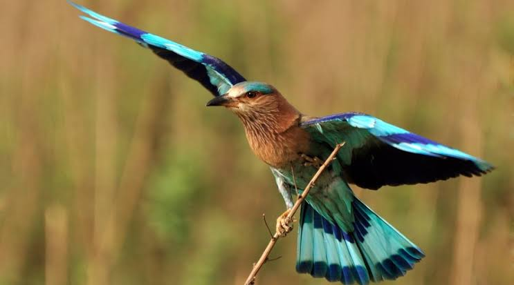

Indian roller
Birds
The Indian roller is a bird of the family Coraciidae, the rollers. It occurs widely from West Asia to the Indian Subcontinent. It is listed as least concern on the IUCN Red List. It is best known for its aerobatic displays of males during the breeding season.
Scientific name: Coracias benghalensis
Mass: 160 g (Adult) Encyclopedia of Life
Conservation status: Least Concern (Population increasing) Encyclopedia of Life
Rank: Species
Higher classification: Coracias
Family: Coraciidae
The Indian roller (Coracias benghalensis) is a bird of the family Coraciidae, the rollers. It occurs widely from West Asia to the Indian Subcontinent. It is listed as least concern on the IUCN Red List.
It is best known for its aerobatic displays of males during the breeding season. It is often seen perched along roadside trees and wires and are commonly seen in open grassland and scrub forest habitats.
The largest population occurs in India, and several states in India have chosen it as their state bird.
The Indian roller is a stocky bird about 26–27 cm long and can only be confused within its range with the migratory European roller. The breast is brownish and not blue as in the European Roller. The crown and vent are blue.
The primaries are deep purplish blue with a band of pale blue. The tail is sky blue with a terminal band of Prussian blue and the central feathers are dull green.
The neck and throat are purplish lilac with white shaft streaks. The bare patch around the eye is ochre in colour. The three forward toes are united at the base. Rollers have a long and compressed bill with a curved upper edge and a hooked tip.
The nostril is long and exposed and there are long rictal bristles at the base of the bill.
The three forward pointing toes appear to be joined at the base
Three subspecies are usually recognized. The nominate form is found from western Asia (Iraq, Arabia) east across the Indian Subcontinent, and within India north of the Vindhyas mountain ranges.
The subspecies indicus is found in peninsular India and Sri Lanka. The southern form has a darker reddish collar on the hind neck which is missing in the nominate form.
The Indochinese roller of eastern India and Southeast Asia (Thailand, Myanmar, Indochina) has been suggested as a full species, but within the Indian region, it is seen to intergrade with benghalensis.
The Indochinese roller is darker, larger and has a purplish brown and unstreaked face and breast. It has underwing coverts in a deeper shade of blue.
Biology of Indian roller
Distribution and habitat
The Indian roller is distributed across Asia, from Iraq and United Arab Emirates in south-western Asia through the Indian Subcontinent, including Sri Lanka, Lakshadweep islands and Maldive Islands.
Its main habitat includes cultivated areas, thin forest and grassland.
Ecology and behaviour
Indian rollers are often seen perched on prominent bare trees or wires. They descend to the ground to capture their prey which may include insects, spiders, scorpions, small snakes and amphibians.
Fires attract them and they will also follow tractors for disturbed invertebrates. In agricultural habitats in southern India, they have been found at densities of about 50 birds per km2.
They perch mainly on 3–10-metre high perches and feed mostly on ground insects. Nearly 50% of their prey are beetles and 25% made up by grasshoppers and crickets.
The feeding behaviour of this roller and habitat usage are very similar to that of the black drongo. During summer, they may also feed late in the evening and make use of artificial lights and feed on insects attracted to them.
They are attracted to swarms of winged termites, and as many as 40 birds have been seen to perch on a 70-metre stretch of electric wires.
Its habit of feeding near roadsides sometimes results in collisions with traffic. A decline in the numbers of these birds seen along roadsides in northern India has been noted.